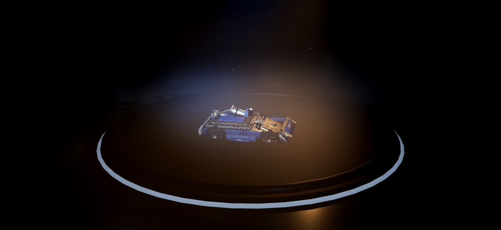
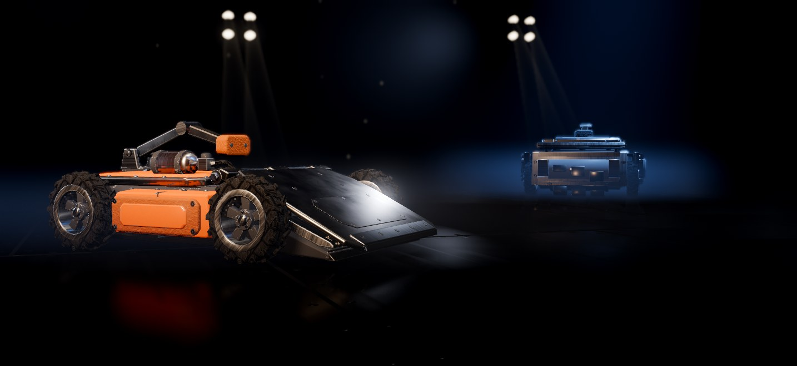
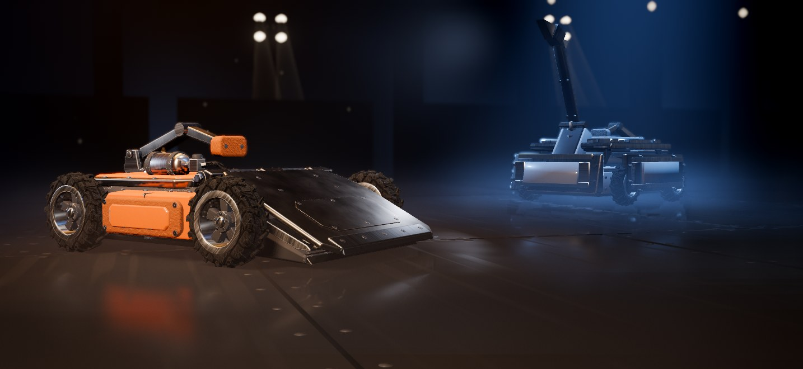
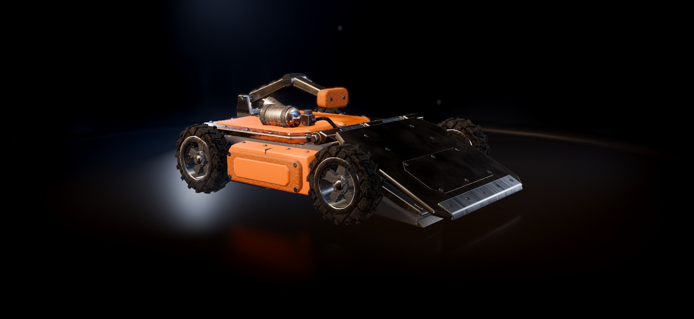
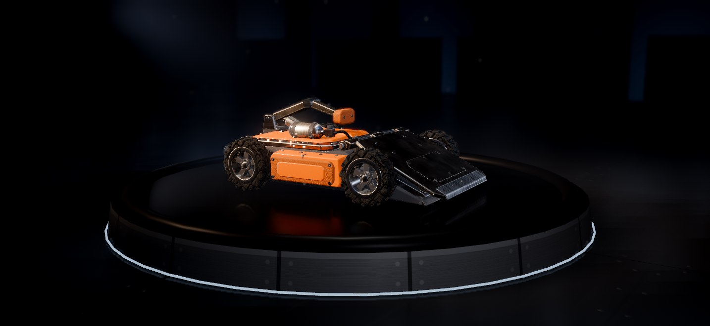
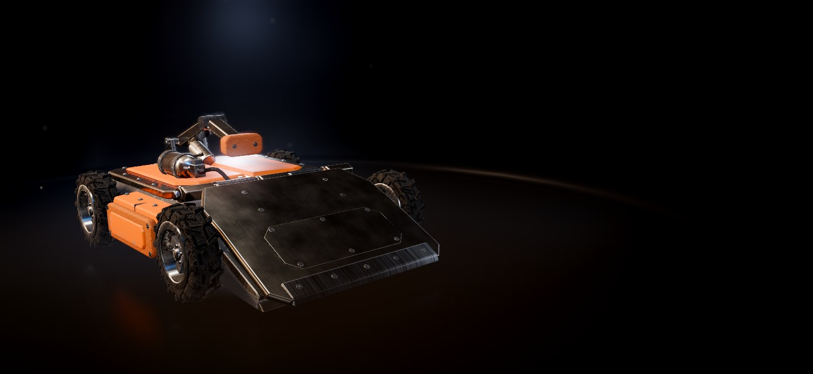
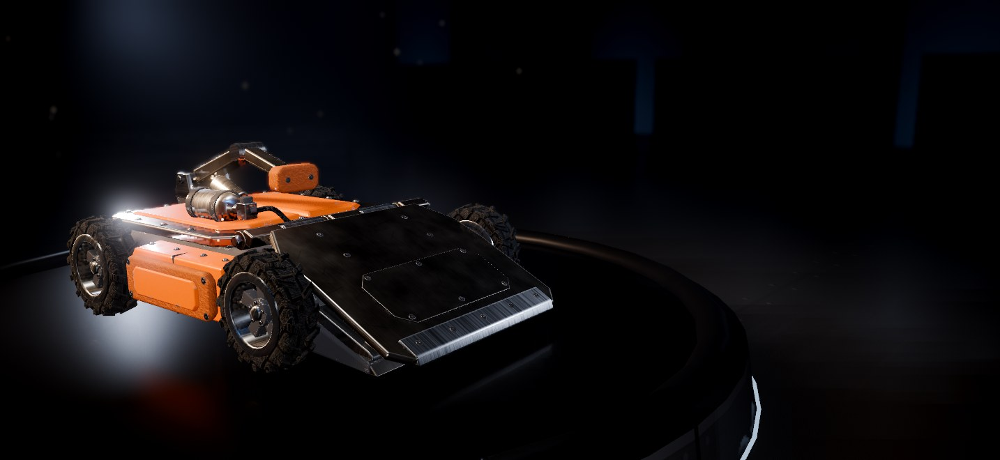
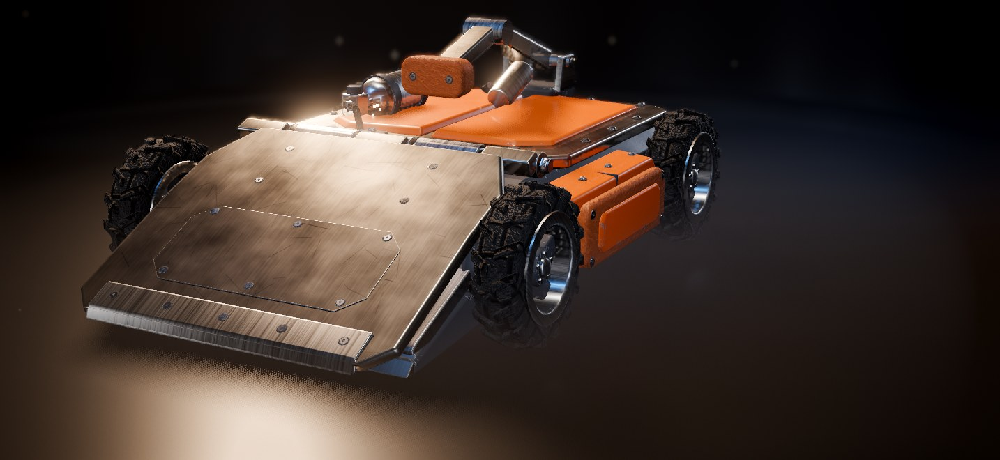
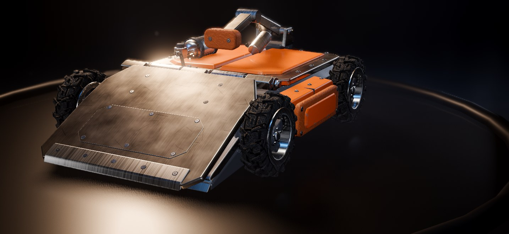
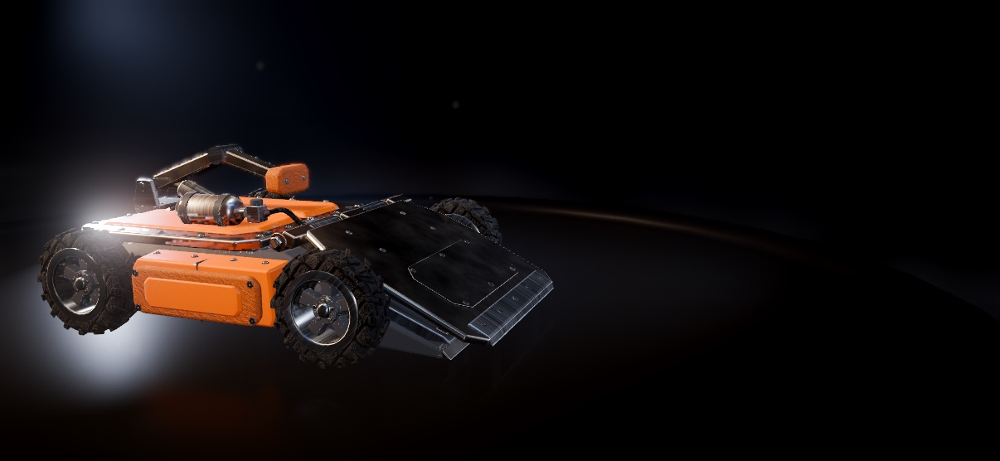

The starter wedge with a flipper on the four stage shots the owner picked: M2 face-off,
M1 showroom, G1 garage and G2 part pull-out. Each row shows the target, what the engine
drew before wave A, pass 1 (25 September, afternoon) and pass 2 (25 September, evening).
All captures are desktop Forward+ at 1434 x 660 on the high tier, with the committed
models and materials. The hero machine's silhouette belongs to the models work and is
judged here only as it is. The verdicts are blunt on purpose.
M2 face-off (main menu with a next opponent)
Director shot faceoff: 50 mm lens 0.26 m off the floor, platform retracted, hero warm on the left, opponent cold on the right.
Target

Before

Pass 1

Pass 2
Pass 2 closed
The floor reads: grey wet steel plate with seams and rivet rows, a warm pool under the hero, a cold pool round the opponent, and the hero's orange reflected in it. The floor was black in pass 1 because a dense, unlit fog bank lay along it and swallowed every metre past the hero. That bank is now thin, breaks into drifting wisps and is faintly lit.
Haze with direction: a cold volumetric shaft onto the opponent lights the smoke round its wheels, and a warm shaft falls over the hero. The black above is kept.
Something behind: a dim hall (a wall with a patchy spill of light at its foot, steel ribs, a barrier, truss lamps as small points) instead of a void.
The opponent is nearer and larger, and carries an axe, so its weapon reads as a silhouette against the blue. The slice uses an axe because the catalogue's vertical spinner is a floor-level drum that never reads at this size.
Still short
The hero's silhouette (a low flat box with a plate) is the biggest gap. That is the models agent's work.
The target's air is thicker and brighter, with visible smoke banks on both sides and sparks. Ours is subtler, especially on the warm side.
The opponent is still smaller and less dramatic than the target's, which fills a third of the frame height under a hard rim light.
The hall suggests a building, not an arena: no audience structure and no lamp rows with depth.
The medium tier (phones without Forward+) keeps the floor and the pools but loses the shafts and the lit smoke; it draws the additive cones instead (medium capture).
Honest distance: about 60 percent of the way (pass 1: a third). The remaining gap is mostly the hero model, then the density of the air.
M1 showroom (main menu, no opponent)
Director shot showroom: 50 mm, turntable at 5 degrees a second, opening three quarters to the lens.
TargetBefore

Pass 1

Pass 2
Pass 2 closed
A plinth you can read: a 1.9 m steel drum with bolted brushed panels, a bright chamfer at the lip, a steel band round the black gloss top and a light at its foot. It used to be a 3 m gloss disc whose edge was outside every frame.
The framing pulls back so the machine and the plinth sit together as in the target, with the hall faintly behind.
Still short
No overhead light bars and no bokeh practicals: the target's top third is lit and ours is black.
The smoke round the plinth is too faint to see in a still; the target is full of it.
The floor round the plinth is dark; the target's is wet and bright with reflections.
The same hero model gap as the face-off.
Honest distance: about half way (pass 1: a third).
G1 garage (assembly bay)
Director shot garage: 40 mm, machine at 31 percent across so the SwiftUI panel can own the right. Not a pass 2 target; recaptured because the plinth and the floor changed.
TargetBefore

Pass 1

Pass 2
Now matches
The framing, and the plinth edge, which now reads.
Still short
There is still no assembly bay: no parts wall, gantry or softbox in frame. That room is art and it is the biggest gap.
The hall kit reads as a dark back wall, which is not a workshop.
Honest distance: about a quarter of the way (unchanged; the room is the missing piece).
G2 part pull-out (garage focus on the weapon)
Director shot part:weapon: 70 mm, the category's bodies pulled 11 cm out, near and far depth of field. Not a pass 2 target.
TargetBefore (no part focus existed)

Pass 1

Pass 2
Now matches
A warm product shot with shallow focus; the brushed steel and the bolt heads read.
Still short
The target is a full exploded view with loose bolts and a pegboard behind. We slide one category out by 11 cm.
Honest distance: about 40 percent of the way (unchanged).
Owner bug: wheels through the floor on stage screens
Fixed in pass 1. The stage stands every machine on its lowest ground contact (wheel bodies, track belts, legs, hover skirt), measured from the render geometry.
Before: wheels sunk by their radius on the raised turntable

After: every drive within 2 mm (tested, vertex exact)
What would close the rest, in order of payoff
Gap
Owner
Why it matters
Hero model: a sculpted armour shell and taller tyres
Models
Every target reads premium first because of the machine's silhouette.
Garage room: parts wall, gantry, softbox in frame
Stage and art
G1 is a room; without it the garage is a dark stage.
Thicker, brighter smoke, and overhead light bars in M1
Stage
The targets' top thirds and floors glow; ours stay dark.
An arena behind the face-off (structure, lamp rows)
Stage, with the venue kit later
The hall kit suggests a building, not an arena.
A device check of the high tier's cost
Stage
The pass 2 fog, shafts and hall have not been timed on a phone.